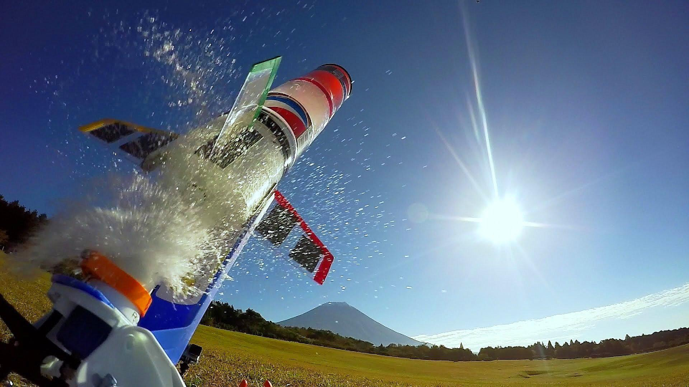

SU ROKETLERİ

Uçan model roketler geliştirmek, öğrencilerin kuvvetlerin temellerini ve bir roketin dış kuvvetlere tepkisini öğrenmeleri için nispeten güvenli ve ucuz bir yoldur.
Bir model roket, uçuşu sırasında dört farklı kuvvete maruz kalır; ağırlık (weight), kaldırma kuvveti (lift), aerodinamik hava direnci (drag) ve itme kuvveti (thrust)
Bir öğrencinin karşılaştığı ilk ve en basit roket türlerinden biri şişe veya su roketidir. Su roketi sistemi, fırlatıcı ve roket olmak üzere iki ana bölümden oluşur.
Aşağıdaki şekilde genel bir fırlatıcı gösteriliyor ancak fırlatıcılar gösterilenin dışında çok çeşitli şekil ve boyutlarda olabilirler.
Fırlatıcı, fırlatma sırasında roketi desteklemek için bir tabana sahiptir. İçi boş bir fırlatma borusu tabana dik olarak monte edilir ve fırlatmadan önce roketin altına yerleştirilir.
Fırlatma borusu, içi boş bir besleme hattı ile hava pompasına bağlanır. Pompa, rokete itki sağlamak için gövdedeki basıncı arttırma amacıyla kullanılır. Biz bu şekilde sistemdeki basınç değişikliğini göstermek için besleyici hattına basınç göstergesi ekledik. Sistemin bu kısmı temel basınçlı hava roketine* çok benzer.
Su roketinin diğer bir kısmı da roketin kendisidir. Genellikle roketler 2 litrelik gazoz şişesiden yapılır. Fırlatmadan önce şişe "itici" görevi gören bir miktar su ile doldurulur. İsteğe bağlı olmak üzere bu miktar genellikle roketin hacminin %40'ı kadardır.
Su havadan yaklaşık 100 kat daha ağır olduğu için dışarıdan atılan su, tek başına basınçlı havadan daha fazla itme kuvveti üretir.
Şişenin tabanı, fırlatma borusundan sadece biraz büyüktür. Roket fırlatma borusuna yerleştirildiğinde gövde sabit hacimli bir kap haline gelir. Gövde içerisindeki basınç, hava pompasının ürettiği basınca eşittir.
Kanatçıklar, uçuş sırasında denge sağlamak için genellikle gövdenin altına takılmıştır.
Tam ölçekli bir roket gibi su roketinin ağırlığı da yükseliş sırasında sürekli değişmektedir. Çünkü su çıkışı olmaktadır. Su roketten çıktıkça içeride bulunan basınçlı havanın hacmi artar. Artan hava hacminden dolayı havanın sahip olduğu basınç azalır. Bu da nozülden çıkan suyun akış hızını azaltır. Buna bağlı olarak da üretilen itme miktarı azalır.
Suyun tamamı dışarı atıldığında, şişenin içindeki hava basıncı ile dış basınç arasında bir fark olabilir. Bu basınç farkı, şişenin içindeki havanın basıncı dış basınca eşitleninceye kadar az miktarda itme kuvveti üretir. Basınçlar eşitlendiğinde artık roket tarafından üretilen herhangi bir itme kuvveti kalmaz ve roket yavaşça yükselmeye başlar.
(Seyrüsefer uçuş)
Uçuşun geri kalanı, aerodinamik hava direncinin uçuş yörüngesini değiştirmesi dışında, balistik bir merminin uçuşuna veya bir silahtan atılan mermiye oldukça benzer. Roket, ağırlık ve aerodinamik hava direnci etkisinde yavaşlar ve sonunda bazı basit uzunluk, açı ölçümleri ve trigonometri kullanarak da belirleyebileceğimiz maksimum yüksekliğe ulaşır.
Roket daha sonra yerçekimi gücüyle Dünya'ya geri düşmeye başlar. Su roketleri paraşüt veya yük bölümünün basit bir yolla ayrılması gibi farklı kurtarma sistemleri içerebilir. Böylelikle roketi kurtardıktan sonra tekrar uçurabilirsiniz.
Yukarıda verilen şekilde, uçuş yolunu gökyüzüne doğru uzanan geniş bir yay olarak görmektesiniz. İdeal olarak, uçuş yolu düz yukarı ve aşağı olacaktır. Bu bize maksimum irtifayı sağlamaktadır. Ancak su roketleri rüzgar oku (weather cocking) adı verilen bir etki nedeniyle uçuş sırasında rüzgara dönüşür. Bu etki, roket üzerindeki aerodinamik kuvvetlerin bir sonucudur ve maksimum irtifanın kağıt üstünde hesaplanandan biraz daha az olmasına neden olur. Parabolik yörünge, fırlatma platformu eğilirse veya roket dikeyden bir açı ile fırlatılırsa oluşur.
Kaynakça:

 Ana Sayfa
Ana Sayfa
 Hakkımızda
Hakkımızda
 Projelerimiz
Projelerimiz
 Etkinliklerimiz
Etkinliklerimiz
 Eğitim
Eğitim
 Blog
Blog
 İndirilebilir
İndirilebilir
 Gönüllü Ol
Gönüllü Ol
 @turkroket
@turkroket
 Destekle
Destekle